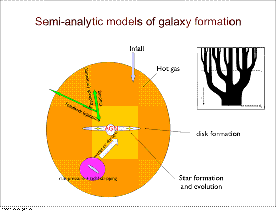
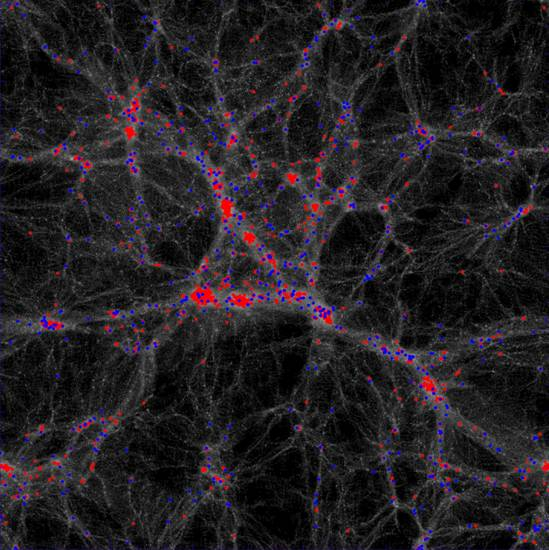
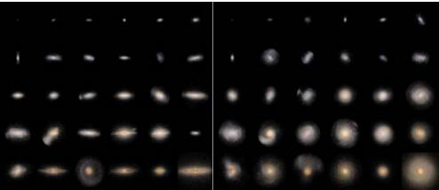
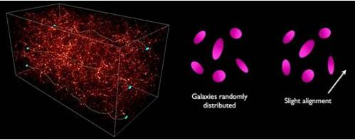

Here we shortly summary the research work in our group. It includes what we have done in the past few years, and what we want to do in near future.
Background
In the last few decades a standard model for the structure formation in the universe has emerged, called the LCDM model. In this model, the accelerating expansion of the
universe is due to the dark energy. The main part of matter is cold dark matter, and the ordinary matter (“baryons”) only accounts for 4% of the total mass density. The
CDM model now provides a very good description of the structure on large and small scales. In this model, structure forms in a hierarchical way that small structure (often
called halo) forms first, and small haloes gradually merge to form big halo. Galaxy is thought to form out of the cold gas in dark matter halo and its evolution involves huge powerful and amazing astrophysical processes, such as supernova explosion, black hole radiation and galactic outflow.
Although the CDM model is very successful to describe the structure formation at different scales from the early to the present universe, there remains a few major questions:
What’s the nature of dark energy and dark matter?
How did galaxies form and evolve across the cosmic time?
How/When does black hole form and how does it co-evolve with its host galaxy?
Answering these questions will drive and shape the future of astrophysics, and even dramatically influence the future of physics. Below we highlight the research work in our group.
Galaxy formation and evolution
Galaxy formation involves complicated astrophysics process: gas heating and cooling, star formation from cold gas via gravitational instability, supernova explosion from death of massive stars, galaxy merger, black hole growth and energy feedback, stellar evolution and winds, metal transport between different gas phase etc. These process are complicated, and it can not be modeled. Most important, we still know little about the detail of these processes.
A: Semi-analytical model
We have developed a semi-analytical model (SAM) for galaxy formation (Kang et al. 2005-2014) . The model incorporates the physical descriptions of star formation, and it is combined with the merger trees from cosmological N-body simulations. The SAM has now become a powerful tool to model galaxy formation in a cosmological context. The following figures show the framework of the SAM and its predicted model galaxies in a cosmological simulation.


Although the SAM has been shown to well reproduce the local and high-z observations, there are still a few questions remaining. We are now working on the two questions:
What’s the role of black hole feedback in galaxy formation and evolution? We are trying to develop a co-evolution model for galaxy and black hole, so as to predict the QSO luminosity function
What drive the evolution of stellar mass functions? Which mechanism is needed to reproduce the evolution of observed stellar mass function from z=3 to z=0? We are trying to answer this question
B: Hydro-dynamical simulation of galaxy formation
The baryonic physics is complicated, so the analytical descriptions are very crude and inaccurate. Hydro-dynamical is the best tool to galaxy formation and to study the effects of various assumptions of baryonic processes. However, running hydro-dynamical simulation is very expensive.
We have carried out a set of hydro-dynamical simulation by simulating a Hundred Astrophysical Objects using the GASOLINE code. (NIHAO project, see Wang et al. 2015, MNRAS, 454, 83) by collaborating with the scientists in Max-Planck-Institute for astronomy (lead by Dr Andrea Maccio). These one-hundred galaxies well stand on the halo mass-stellar mass relation, implying that our simulation well captures the physics governing star formation in these objects. Below are some predicted galaxies produced in NIHAO projects.

Using NIHAO galaxies, we have obtained a few important results, and they can be found in the series of papers (arXiv:1503.04818, 1503.04814, 1507.03590)
The inefficient star formation in low-mass galaxies can be produced by the stellar wind feedback (prior to the supernova explosion)
Dark matter haloes are rounder in our simulation, in agreement with the data
The inner halo density profile depends on the ratio between the stellar mass and the halo mass.
We are now trying to include the AGN feedback into the massive galaxies in our simulation to produce more realistic massive galaxies.
Large scale structure (LSS) and galaxy distribution
The matter distribution in the universe is complicated, and displaying the cosmic web manner. On large scales, galaxy groups and clusters by connected by filaments. Some area are devoid of galaxies, or with very low density, they are called as voids (Fig.2 well displays the cosmic web). On small scales, galaxies are also not randomly distributed, but showing anisotropy, which is often called as galaxy alignment. Related questions in this field are:
How to clarify the large-scale structures in the universe?
How is galaxy properties correlated with the LSS?
Why the spin-LSS correlation is different for massive and low-mass galaxies?
What’s the origin of galaxy alignment on different scales?
We are working to answer these questions. In the past two years we have obtained these results. 1) Satellite galaxies aligned with the major axis of the central galaxy in dark matter halo. The main reason is the non-spherical nature of dark matter halo. Red satellite galaxies are well aligned with the central galaxy because red satellites are living in the inner region of the dark matter halo, where the shape of central galaxy trace better the shape of dark matter halo in inner region. The alignment between central galaxy with dark matter halo increased with halo mass, so it can explain the observed stronger alignment in massive haloes. These results can be found in the paper(Dong X., et al., 2014, ApJ, 791,L33, Wang Y et al., 2014, ApJ, 786, 8).
Observations have shown that galaxy spin is correlated with the cosmic filament. For elliptical galaxies, their spin is perpendicular to the filament, but spiral galaxies have their spin parallel to the filament. This is puzzling. To understand this correlation, we must go back to the early universe to see how mass is accreted into the dark matter halo. We find that in low-mass haloes, the mass is accreted perpendicular to the filament, but in massive haloes, the mass is dominantly accreted along the filament. If the orbital angular momentum is transferred to halo spin, it is naturally expected to see the different correlation of halo spin with filament in halo with different mass. This result well explains the observation, which can be found in this paper (Kang X & Wang P, ApJ in press, arXiv:1509.06804)
Weak lensing as a cosmology probe
According to the general relativity, light will deflected when it passes an inhomogeneous mass field. In the strong lensing regime, a background galaxy or qso will be observed with multiply images, or with giant arc. However, the probability of strong lensing phenomenon is very small. In most case, the deflection of light will be very small, and in the weak lensing regime, the lensing produces a very weak distortion of the background source. As the deflection of light only depend on the total mass density distribution, compared to other tools, such as SZ effect, it does not depend on the physical state of the lensing system, so gravitational lensing is a very clean and powerful tool to probe the mass distribution in the universe and being widely used in future large sky survey, such as the Large Syniptic Survey Telescope (LSST), Kunlun Dark Universe Survey Telescope (KDUST, to be placed in Dome-A Antarctic, proposed by Chinese scientists)DUST. The following figures illustrate the lensing effect, left: light travel. Right: shape distortion of background galaxies:

In weak lensing regime, the shape distortion of background galaxy is very small, the measure signal is contaminated by many facts in which the main source is the point spread function (PSF). To make use of weak lensing to probe cosmology, we need to solve the following problem:
Accurate reconstruction of PSF
Full-sky ray-tracing
Understanding the effect of large scale structure on shear map
In this field, our final goal is to construct a realistic mock galaxy image catalogue for future large sky survey (LSST, KDUST). We will use a large N-body simulation covering large cosmological volume, combined it with a semi-analytical model for galaxy formation to produce galaxy catalogue, using ray-tracing to produce galaxy image, studying the effect of telescope system on the final image on CCD.
Other interested research
We are also interested in these projects: N-body simulation of galaxy mergers, Hydro-dynamical simulation of galaxy clusters, galaxy formation in warm dark matter model.